- 項目を変更するタブ名を選択します。
- 「タブ項目追加」ボタンをクリックし、タブ項目を追加します。
- 表示する列数、および項目数を選択します。
- 列数、各列の項目数設定後、「登録」ボタンをクリックすることで、列数、各列の項目数が保存されます。
-
編集したい項目の「
 」ボタンをクリックし、
タブ名を編集します。
」ボタンをクリックし、
タブ名を編集します。
- 表示するタブのチェックボックス切り替えることで項目の表示・非表示を切り替えられます。
- 表示項目設定後、「登録」ボタンをクリックすることで、列数、各列の項目数が保存されます。
- 各行をドラッグ＆ドロップすることで表示順の変更が可能です。
- 表示順変更後、「登録」ボタンをクリックすることで、表示順が保存されます。
-
「
 」ボタン
をクリックすることでタブ項目を削除できます。
」ボタン
をクリックすることでタブ項目を削除できます。
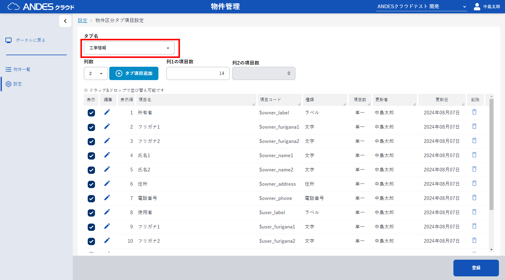
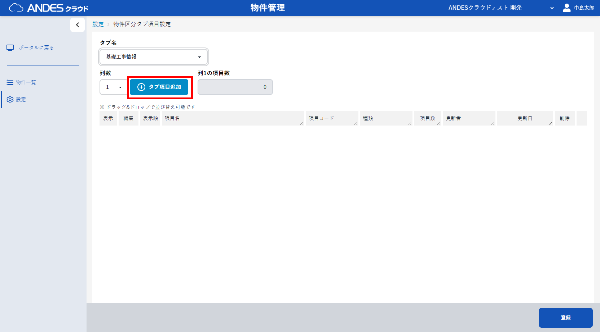
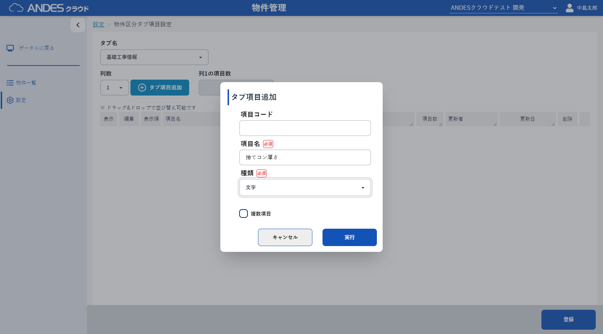
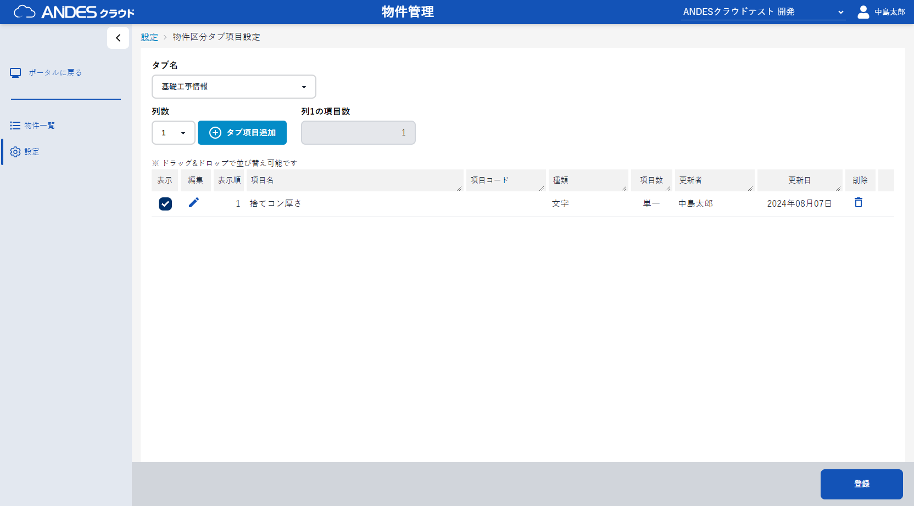
ポイント
項目は左から右へ順に配置し、その後、上から下へ順に配置されます。
項目数の総数は表示対象の項目数となっています。
列数1：表示対象のすべての項目を1列で表示します。
列数2：表示対象の項目を2列で表示します。列1の項目数を設定することで2列目の項目数が決定されます。
列数3：表示対象の項目を3列で表示します。列1、列2の項目数を設定することで3列目の項目数が決定されます。
注意
種類「ラベル」、「住所」は列数に関わらず1行で表示されます。
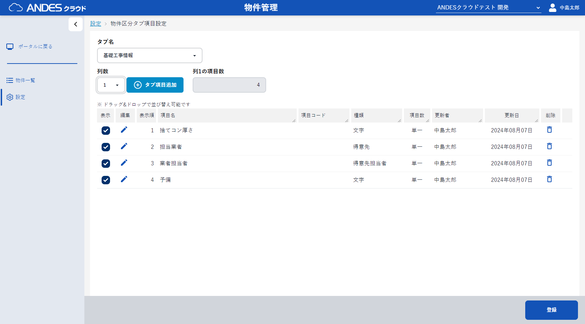
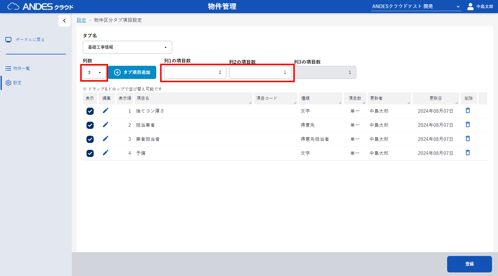
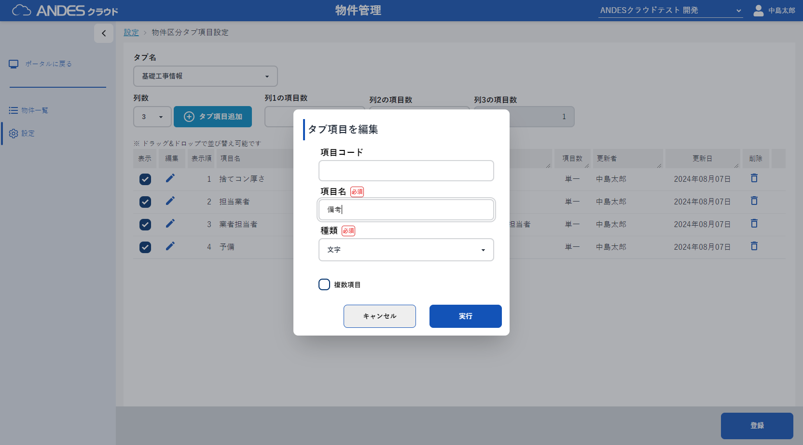
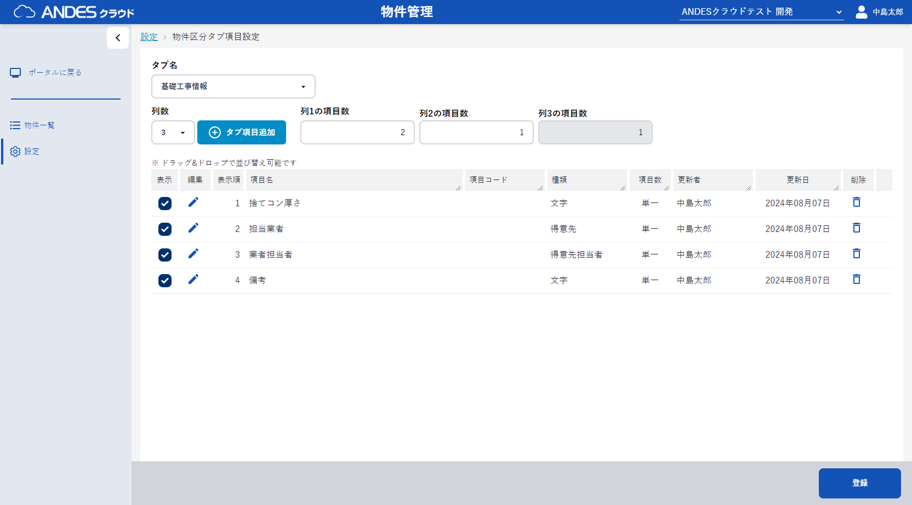

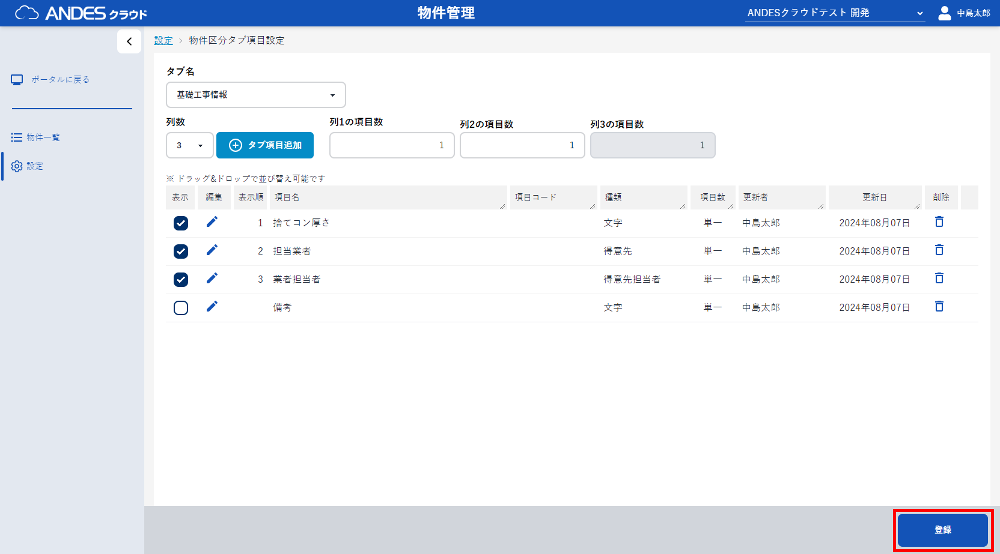
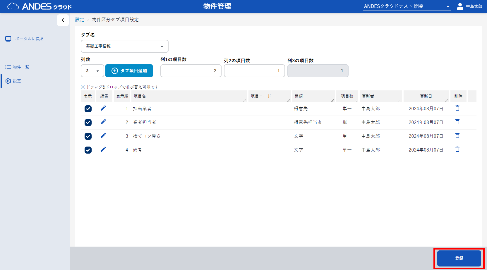
注意
作成済の物件で利用されている場合(淡色化している「」ボタン)は、削除することが出来ません。
」ボタン)は、削除することが出来ません。
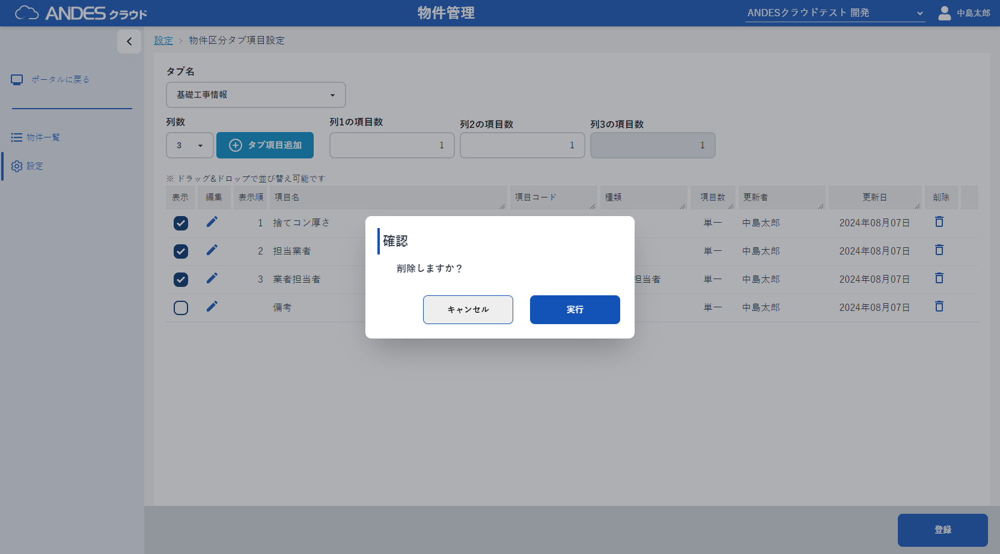
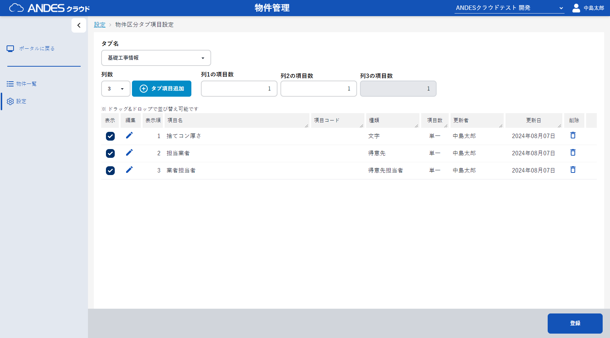